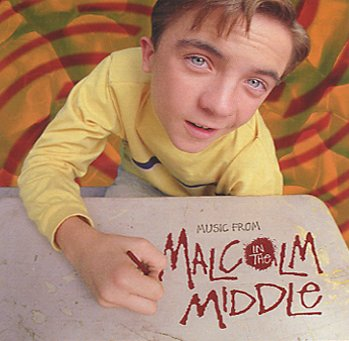

"Life is Unfair" - The Soundtrack from
Malcolm in the Middle

Track Listings
| 1. Boss
of Me 2. Falling for the First Time 3. Smile 4. We Are Monkeys 5. Washin' + Wonderin' 6. Heaven Is a Halfpipe 7. Drunk Is Better Than Dead 8. Good Life 9. Bizarro |
10.
Right Place, Wrong Time 11. Tune In 12. Don't Push It, Don't Force It 13. Cotton Eyed Joe 14. Older 15. I Just Don't Care 16. The Malcolm Mix 17. I Just Don't Care |
One song that isnt included on the soundtrack is the song that Hal makes Malcolm skate to on "Rollerskates". I've had alot of people ask me what that song is called. Its called "Funkytown" by Lipps Inc.
Created
by Michelle!
Home | Photos | Cast Bio's | Links | Quotes